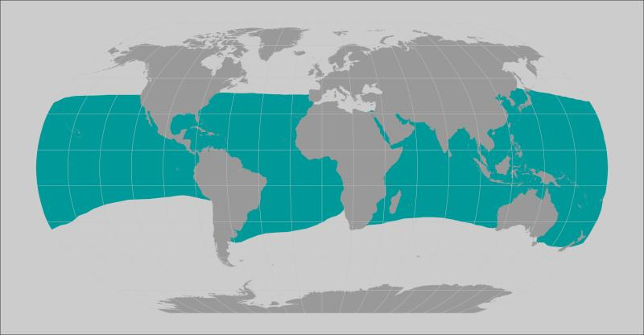

Behavior
Giant Manta Rays tend to be solitary, but they aggregate at cleaning and feeding sites. They migrate between feeding sites, and can be found at a variety of depths between 10 meters and 1000 meters. This diving behavior is still studied and may be influenced by season.
Habitat and Range
The Giant Manta Ray is found worldwide in tropical, subtropical, and temperate bodies of water. Most commonly found in productive coastal areas to feed on plankton, but is also found offshore. Additionally, they have also been observed in estuaries, inlets, within bays, and intercoastal waterways.
Approximate representation of Giant Manta Ray range.
Source: NOAA
Life Cycle
The eggs of an oceanic manta ray develop inside of the oviduct where they hatch.
After they hatch and develop even further, the mother will finally give birth to the live pups usually in shallow water.
These pups, which resemble smaller versions of adult manta rays, will stay in these shoals for a few years until they completely mature.
Diet
Giant Manta Rays are filter feeders that mostly eat zooplankton. They feed by swimming with their mouths open, and the water flows through their gills and out their gill slits. The gill rakers filter out the plankton, similar to how whales eat. They can consume up to 60 pounds of plankton per day, and continuously migrate along productive coastlines.
When feeding, Giant Manta Rays do somersaults or form feeding chains with other rays.
A Giant Manta Ray doing a somersault
Source: Thomas Peschak, National Geographic